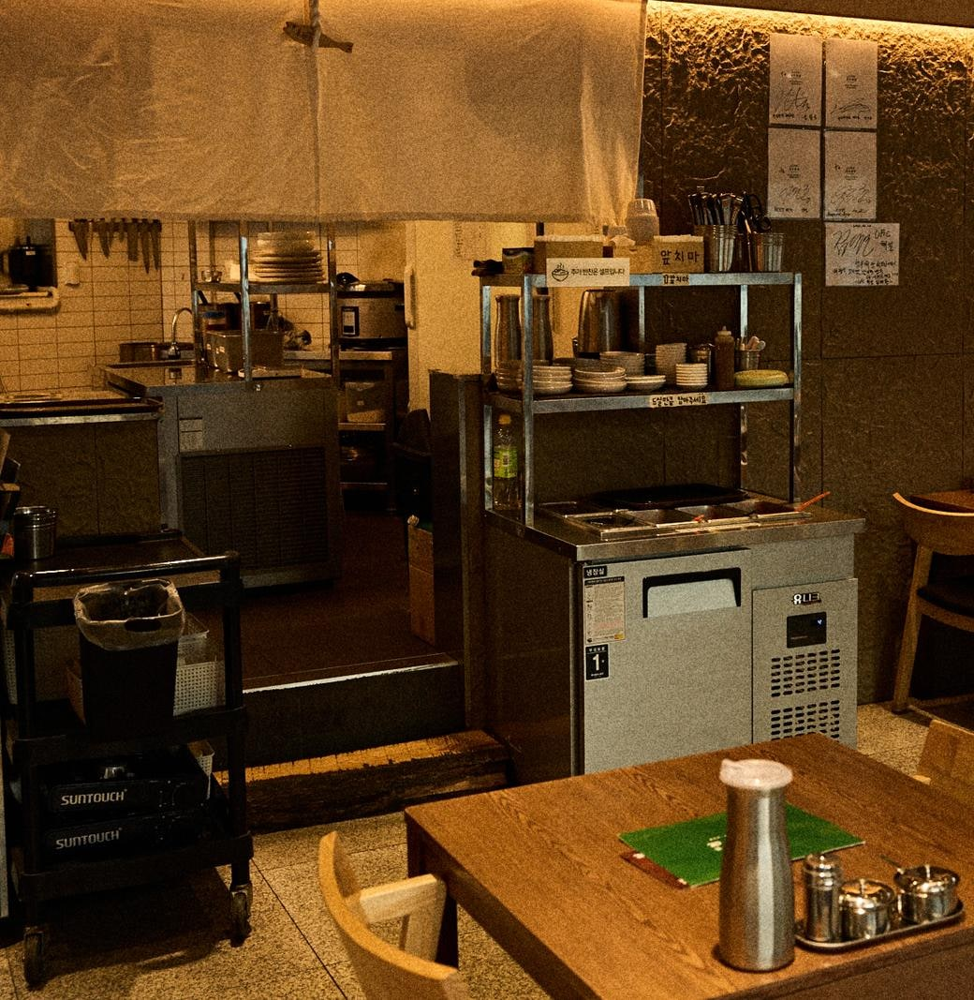

대구 약전골목 맛집·대구 한식당
— 소고기 국물의 집 청우해장
대구 약전골목 맛집을 찾으신다면 — 약령시 약전골목 1층, 소고기 국물 전문 한식당 청우해장입니다. 대구 시내에서 한식당을 찾을 때 기준은 보통 세 가지입니다 — 어르신이 드실 수 있는가, 여럿이 앉을 수 있는가, 외국인 일행과 함께 가도 되는가. 청우해장은 이 셋을 다 갖춘 대구 시내 한식당입니다. 반월당역에서 걸어서 약 7분, 360년 약전골목 안입니다.
| 위치 | 대구 중구 남성로 11 1층, 약령시 약전골목 · 한의약박물관 도보 약 3분 |
|---|---|
| 개업 | 2016년 |
| 자리 | 40석 · 룸 없음 · 단체 40명 전화 예약 |
| 주문 | 테이블오더 · 반찬 셀프바 · 영어·일본어·중국어 메뉴 화면 |
| 영업 | 11:00–22:00 · 브레이크 15:00–17:00 · 라스트오더 21:00 |

무엇을 내는 한식당인가
한 가지 국물에서 시작합니다. 매일 아침 양지와 사태를 하루 종일 고아 맑고 깊은 소고기 국물을 내고, 그 국물로 탕과 국을 끓이고 그 솥에서 수육을 삶습니다. 화려한 양념보다 국물의 깊이로 승부하는 집입니다.
| 갈래 | 메뉴 | 가격 | 매운맛 |
|---|---|---|---|
| 탕·국 | 청우 약전 소갈비탕 (대표 · 기본 갈빗대 2대) | 16,000원 | 없음 |
| 대구 얼큰해장국 (따로국밥, 대구 10미) | 13,000원 | 얼큰 | |
| 맑은 해장국 | 12,000원 | 없음 | |
| 수육·찜 | 아롱사태 수육 (소/대) · 전골 · 냉채 | 18,000~33,000원 | 없음 |
| 소갈비찜 마늘폭탄 | 22,000원 | 매움 | |
| 소꼬리찜 | 49,000원 | — | |
| 밥·면 | 육회비빔밥 | 14,000원 | 없음 |
| 얼큰 장칼국수 (가을·겨울, 매장 식사만) | 12,000원 | — |
메뉴별 자세한 이야기: 갈비탕 · 따로국밥 · 해장국 · 수육 · 소갈비찜 마늘폭탄 · 소꼬리찜. 사진과 최신 가격은 홈페이지 메뉴에서.

이런 자리에 맞습니다
- 어르신 모시는 자리 — 맵지 않은 맑은 해장국과 아롱사태 수육, 부드러운 갈비의 소갈비탕(기본 갈빗대 2대). 생신·어버이날 자리에도 맞습니다.
- 아이 동반 가족 — 맑은 해장국처럼 맵지 않은 국에 밥 한 그릇이면 아이도 든든합니다.
- 단체·회식 — 40명까지 전화 예약(룸은 없습니다). 콜키지 가능. 여럿이 오실 때는 가족 모임 안내를 참고하십시오.
- 외국인 일행 — 홈페이지의 영어·일본어·중국어 메뉴 화면을 직원에게 보여 주시면 주문하실 수 있습니다.
- 대구 여행 중 한 끼 — 근대골목·계산성당·서문시장이 도보권. 대구 여행 맛집 코스의 점심 자리입니다.

육회비빔밥 — 국물집의 또 다른 얼굴
국물집이지만 육회비빔밥(14,000원)도 냅니다. 신선한 육회에 청우만의 숙성 간장으로 맛을 낸 비빔밥으로, 뜨끈한 갈비탕이나 맑은 해장국을 곁들이면 한 사람 상이 완성됩니다. 포장은 안 되는 메뉴입니다. 자세한 이야기는 육회비빔밥 이야기에 적었습니다.
대구 약전골목 맛집 — 약전골목의 한식당이라는 이름값
청우해장이 있는 약전골목은 1658년에 열려 360년 넘게 이어져 온 대구약령시가 자리한 골목의 한복판입니다. 청우해장은 2016년 이 골목 안, 대구 중구 남성로 11 1층에 문을 열었습니다. 약령시한의약박물관에서 걸어서 약 3분, 진골목에서 약 8분 — 대구 근대골목 2코스의 한가운데입니다.
1929년 잡지 《별건곤》이 「대구의 자랑」이라 부른 대구탕반이 팔리던 옛 도심이기도 합니다. 약을 다루던 골목에서 밥을 짓는다 — 그 이름값을 국물로 지키는 것이 이 집이 하는 일입니다.

대구 시내 맛집 — 반월당역·더현대 대구·중앙로역에서 오는 길
반월당역(1·2호선) 15번 출구(또는 더현대 대구)에서 백화점 옆 골목을 따라 북쪽으로 올라가 한의약박물관을 지나 약전골목에서 왼쪽 — 15번 출구에서 도보 약 7분, 더현대 대구에서 약 6분. 중앙로역(1호선)에서는 약령시 방향으로 걸어서 약 10분. 동성로 중심에서 약 15분, 서문시장에서 약 16분.
자주 묻는 질문
- 어떤 한식당인가요?
- 소고기 국물 전문 한식당입니다. 갈비탕·따로국밥·해장국·수육·찜갈비·소꼬리찜을 냅니다.
- 어르신·아이·단체 모임에 맞나요?
- 맑은 해장국·아롱사태 수육처럼 맵지 않은 메뉴가 있고, 단체는 40명까지 전화로 예약을 받습니다. 룸은 없습니다.
- 외국인 손님과 가도 되나요?
- 홈페이지의 영어·일본어·중국어 메뉴 화면을 직원에게 보여 주시면 주문하실 수 있습니다. 카드·콜키지가 됩니다.
- 약전골목 안에서 점심 먹을 곳이 있나요?
- 네. 청우해장은 약령시 약전골목 안, 대구 중구 남성로 11 1층입니다. 매일 11:00에 열고 15:00–17:00은 브레이크타임, 라스트오더는 21:00입니다. 약령시한의약박물관에서 걸어서 약 3분, 진골목에서 약 8분입니다.
- 위치와 영업시간은요?
- 대구 중구 남성로 11, 약령시 약전골목 안입니다. 반월당역 15번 출구에서 도보 약 7분, 더현대 대구에서 도보 약 6분. 매일 11:00–22:00(브레이크 15:00–17:00, 라스트오더 21:00), 약령시서문 공영주차장 도보 1분.
약을 다루던 골목에서, 밥을 짓습니다
청우해장 — 소갈비탕 · 따로국밥 · 해장국 · 수육 · 찜갈비 · 소꼬리찜
매일 11:00–22:00 (브레이크 15:00–17:00) · 더현대 대구에서 도보 약 6분 · 반월당역에서 약 7분